K umeniu som bola vedená od detstva. Vyrastala som v prostredí slobody, tvorivosti a lásky, ktoré formovalo môj vzťah k svetu aj k sebe samej a tvorba sa pre mňa stala prirodzenou súčasťou života. Študovala som grafiku, dejiny umenia a arteterapiu, V minulosti som pôsobila ako pedagogička a lektorka výtvarného odboru pre deti a mládež a dnes, okrem autorskej tvorby, vediem kurzy pre dospelých a seniorov.
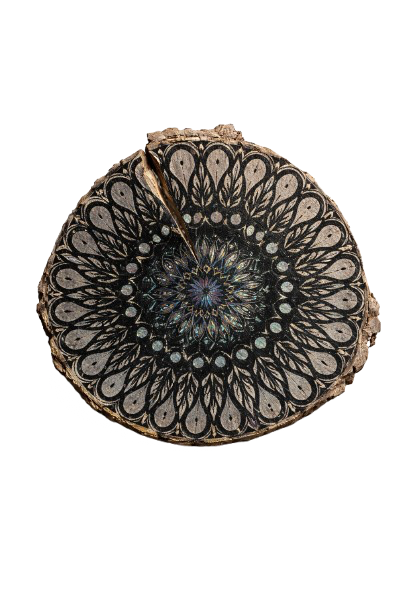
Umenie pre mňa nie je len estetickým vyjadrením. Je priestorom pre slobodu, radosť, sebavyjadrenie a hlbšie vnímanie seba a sveta.
V mojej tvorbe sa v priebehu rokov striedali rôzne techniky - od kresby cez keramiku a grafiku až po fotografiu. Dnes sa sústreďujem najmä na maľbu na drevo. Fascinuje ma jeho prirodzená premena. Každý kus dreva má svoju štruktúru, farbu aj vôňu. V tvorivom procese sa snažím tieto prirodzené kvality citlivo dopĺňať, najčastejšie pomocou akrylu či tušu, no rada experimentujem aj s inými materiálmi a technikami. Moje diela hovoria o zázraku každodenného života, vnútornom svete, o nepodmienenej láske a vzťahu človek-príroda.
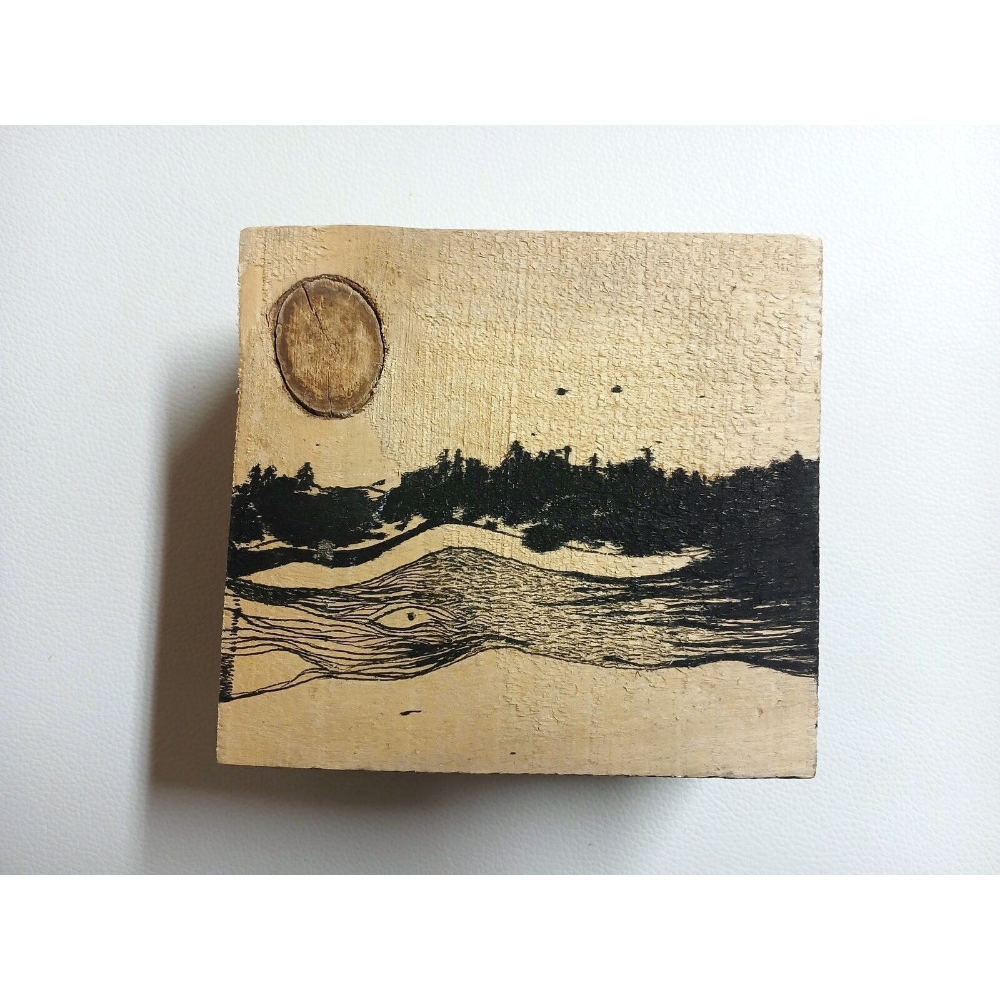
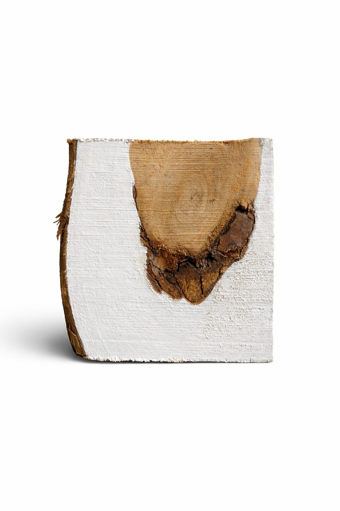
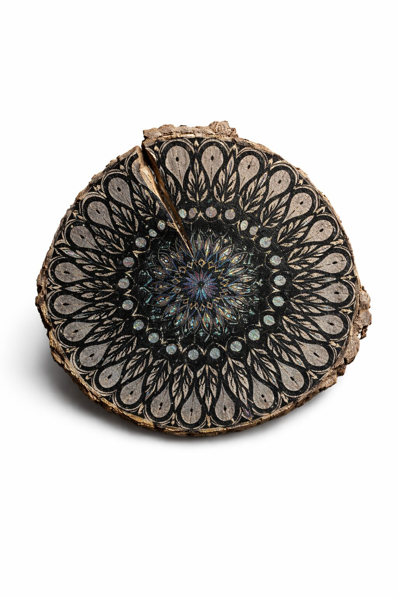
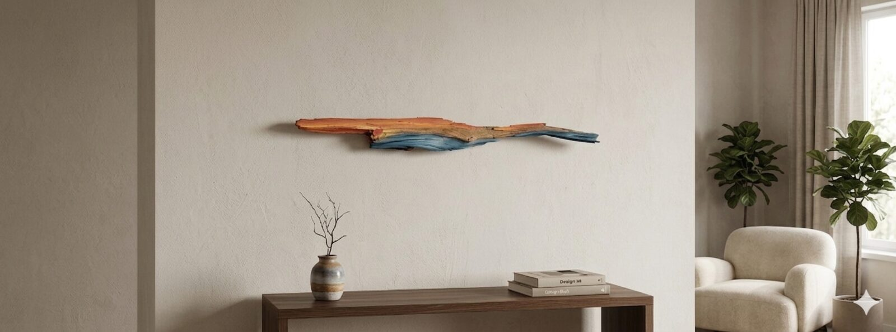
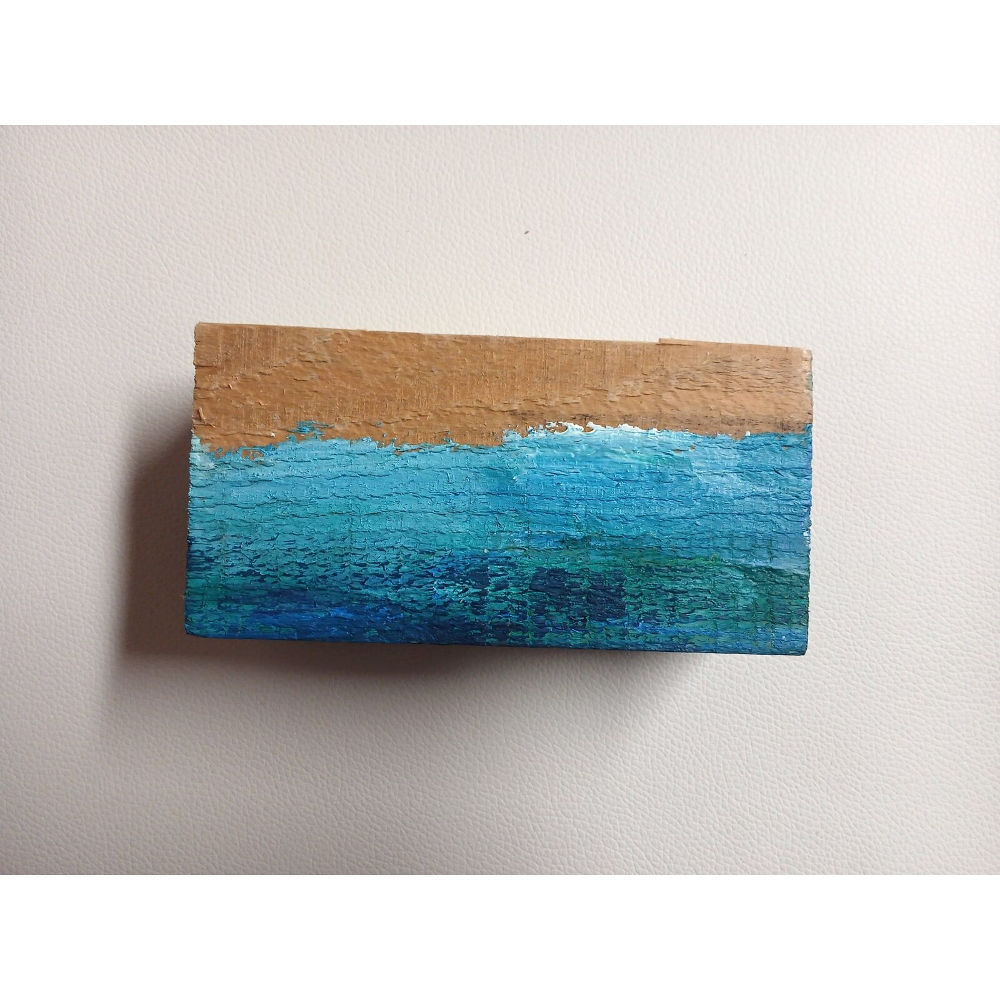
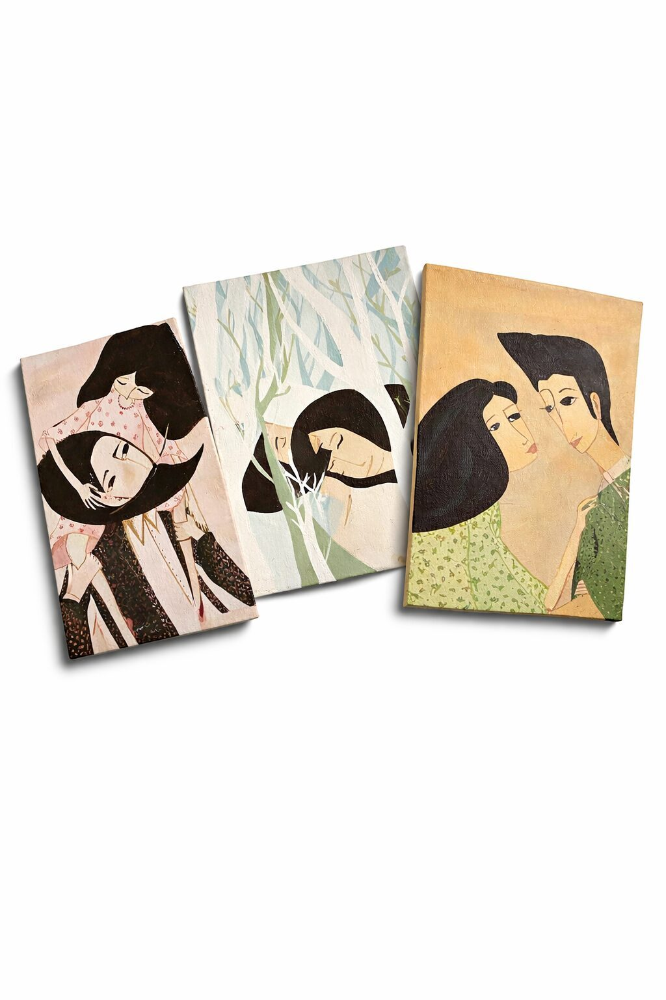
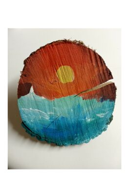
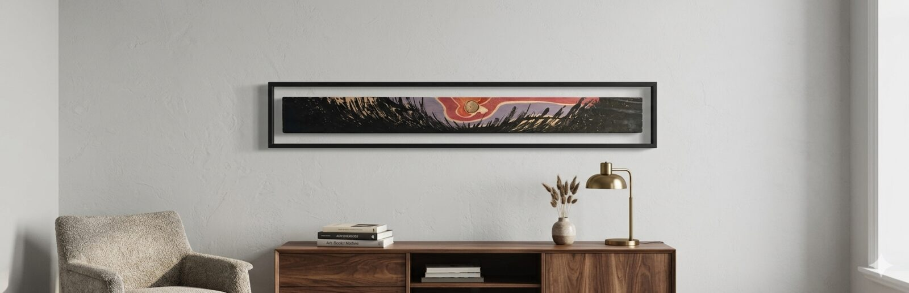
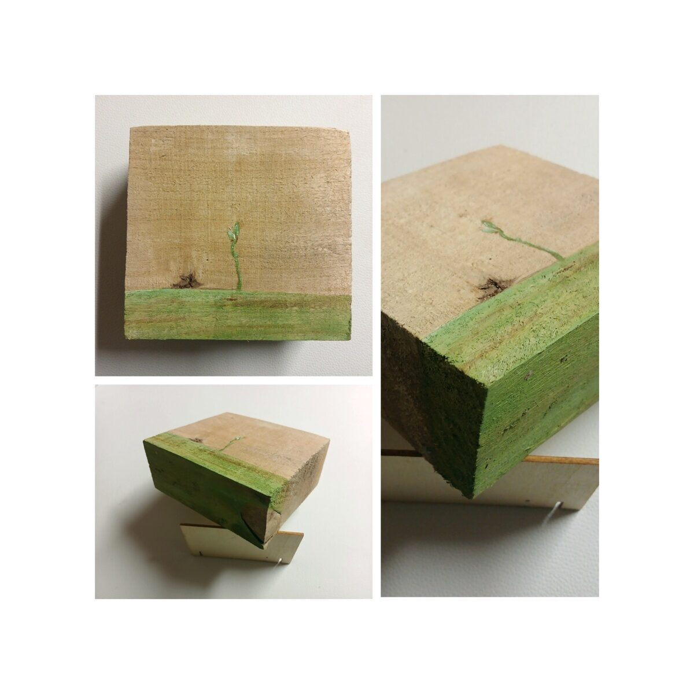
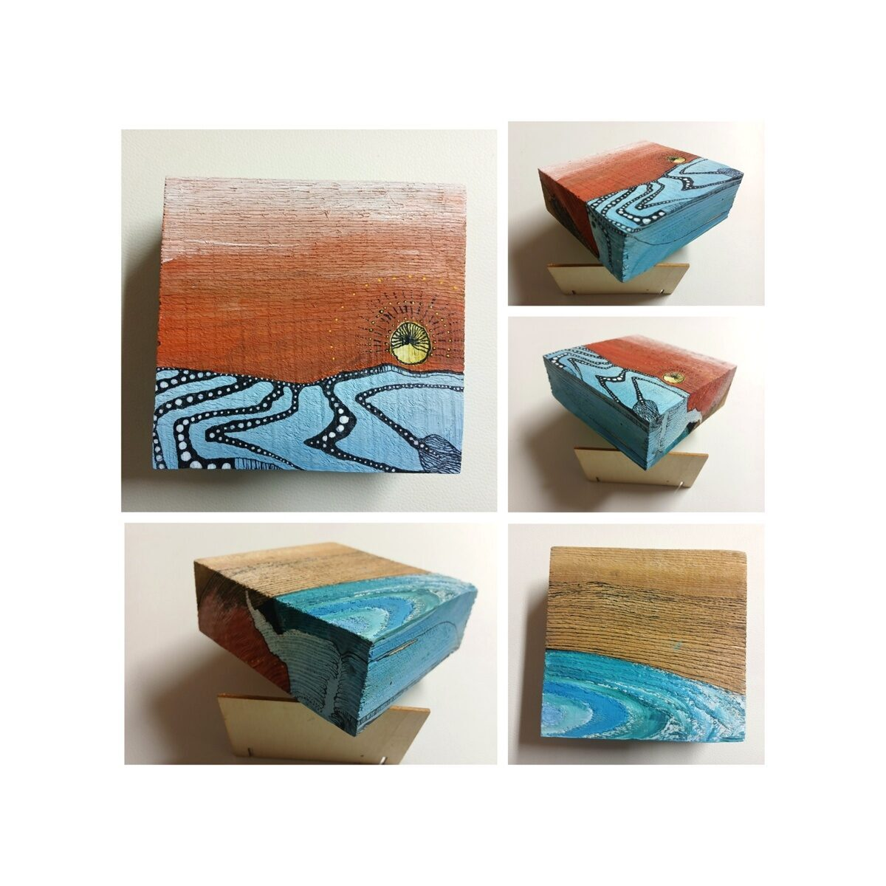
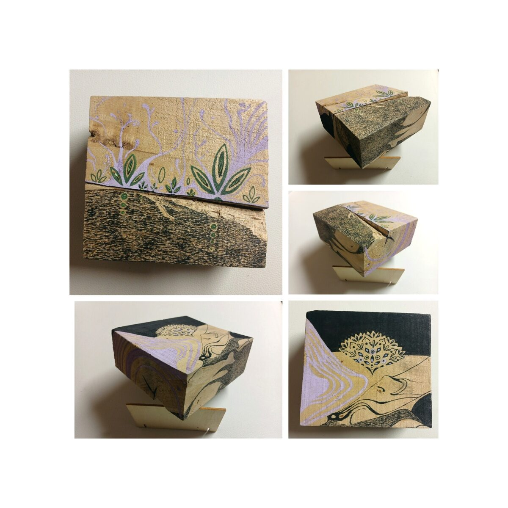
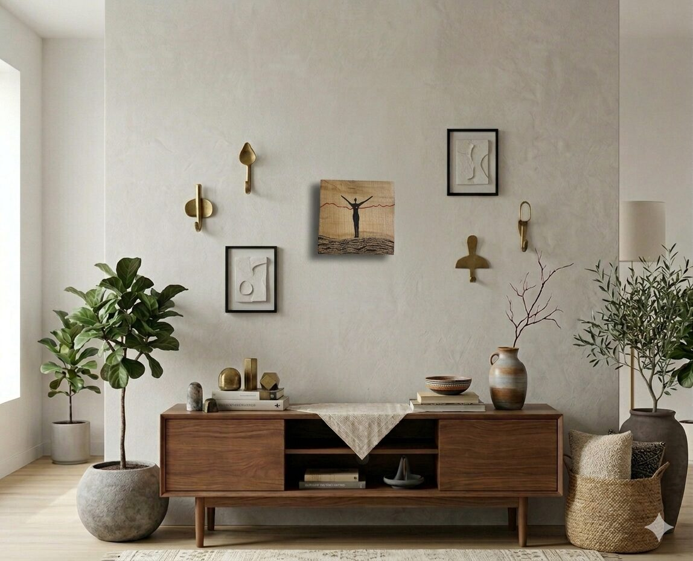
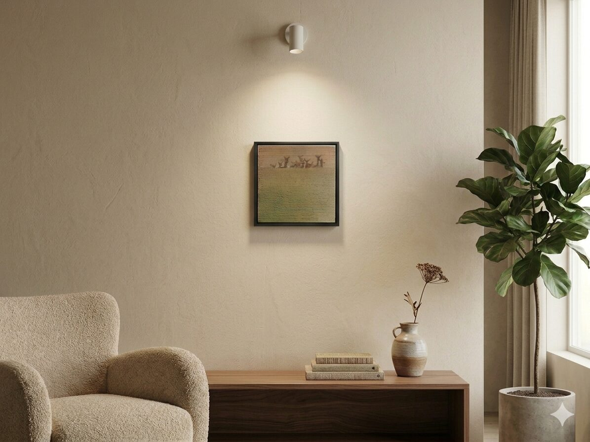
"RASTIEME SPOLU"
samostatná výstava
Galéria Tri steny, Žilina
"111 KÚSKOV LÁSKY"
samostatná výstava
Art Studio Z, Žilina
"TO SME MY"
kolektívna výstava
Považská galéria umenia, Žilina
28–28.11
OPEN ART FEST
Praha, Česká republika
12.–13.6
OPEN ART FEST
Viedeň, Rakúsko
Karolína Hodas
+421 944 388 697